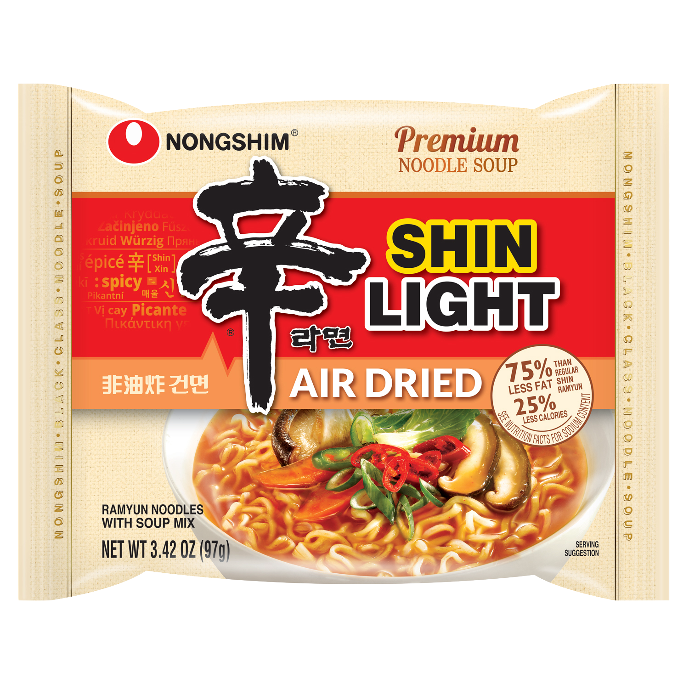
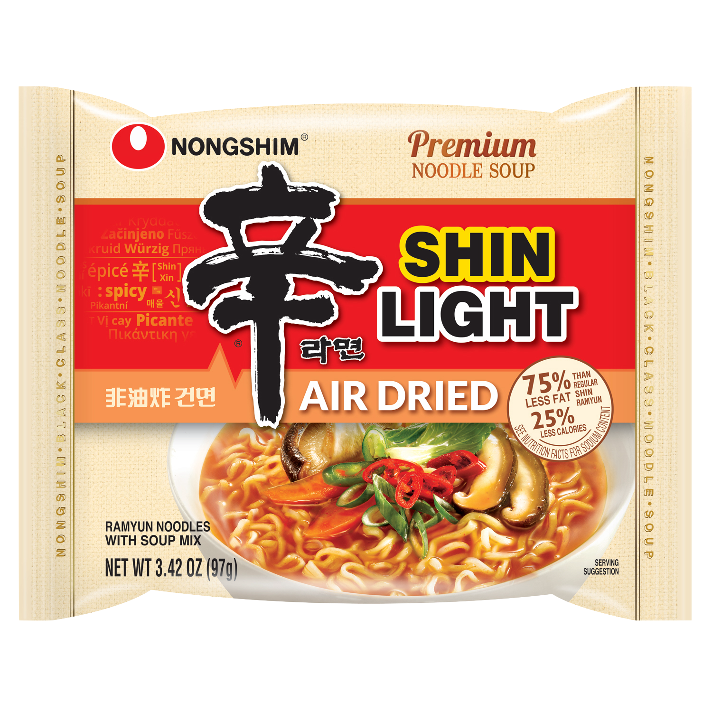

Zha Wang
Weight: 134g
Year of Release: 2015
Rating: 2/5
Notable flavors: chajang sauce, kelp powder
While slightly better than chapaguri, I wasn't exactly a fan of this.

While slightly better than chapaguri, I wasn't exactly a fan of this.


 
